library(ggplot2)
graficar_distribucion <- function(x_muestras, x_grid, p_grid) {
# Graficar histograma de las muestras con la curva de densidad teórica superpuesta.
plt <- ggplot() +
geom_histogram(
aes(x = x, y = after_stat(density)),
fill = "grey60",
bins = 50,
data = data.frame(x = x_muestras)
) +
geom_line(
aes(x = x, y = y),
color = "#3b78b0",
linewidth = 1,
data = data.frame(x = x_grid, y = p_grid)
) +
labs(y = NULL) +
theme_bw() +
theme(
panel.grid.major = element_blank(),
axis.ticks.y = element_blank(),
axis.text.y = element_blank(),
legend.position = "none"
)
return(plt)
}
graficar_traza <- plot_trace <- function(x_muestras) {
# Generar un _traceplot_ para una cadena de Markov.
plt <- data.frame(x = seq_along(x_muestras), y = x_muestras) |>
ggplot() +
geom_line(aes(x = x, y = y), color = "grey30") +
labs(x = "Paso", y = "x") +
theme_bw()
theme(
panel.grid.major = element_blank(),
axis.ticks.y = element_blank(),
axis.text.y = element_blank(),
legend.position = "none"
)
return(plt)
}
set.seed(12) # para que los resultados sean reproducibles11 - Metropolis-Hastings en 1 dimensión
En este recurso se implementa el algoritmo de Metropolis-Hastings para obtener muestras de distribuciones de variables aleatorias unidimensionales utilizando una distribución de propuesta normal. Se muestra como usar el algoritmo con ejercicio Muestreo utilizando el algoritmo de Metropolis-Hastings (I) de la Práctica 3.
Funciones auxiliares
Implementación
metropolis_hastings_normal <- function(n, x, p, sigma, verbose = FALSE) {
# Algortimo de Metropolis Hastings en una dimensión.
# La distribución de propuesta es normal.
#
# Parámetros
# ------------------------------------------------------------------------
# | n | Cantidad de muestras a obtener. |
# | x | Posición inicial del algoritmo. |
# | p | Función de densidad objetivo, normalizada o sin normalizar. |
# | sigma | Desvío estándar de la distribución de propuesta normal. |
# | verbose | Indica si se muestran mensajes con información del |
# | algoritmo en cada paso. |
# ------------------------------------------------------------------------
#
# Salida
# ------------------------------------------------------------------------
# | muestras | Vector con las muestras obtenidas. |
# ------------------------------------------------------------------------
muestras <- numeric(n)
muestras[1] <- x
# Iterar desde i = 1 hasta i = n - 1
for (i in seq_len(n - 1)) {
# Paso 1: Proponer un nuevo valor
x_actual <- muestras[i]
x_propuesto <- rnorm(1, mean = x_actual, sd = sigma)
# Paso 2: Calcular probabilidad de aceptación
p_actual <- p(x_actual)
p_propuesto <- p(x_propuesto)
# Corrección en base a la densidad de la distribución de propuesta
q_propuesto <- dnorm(x_propuesto, mean = x_actual, sd = sigma) # q(x_propuesto | x_actual)
q_actual <- dnorm(x_actual, mean = x_propuesto, sd = sigma) # q(x_actual | x_propuesto)
alpha <- min(1, (p_propuesto / p_actual) * (q_actual / q_propuesto))
# Paso 3: Dedicir si se acepta el valor propuesto
u <- runif(1)
aceptar <- u < alpha
# Guardar posición
if (aceptar) {
muestras[i + 1] <- x_propuesto
} else {
muestras[i + 1] <- x_actual
}
# Si 'verbose' es TRUE, mostrar valores de variables relevantes
if (verbose) {
cat("-----------------------\n")
cat("x_actual: ", x_actual, "x_propuesto", x_propuesto, "\n")
cat("p_actual: ", p_actual, "p_propuesto", p_propuesto, "\n")
cat("q_propuesto: ", q_propuesto, "q_actual", q_actual, "\n")
cat("alpha:", alpha, "u:", u, "aceptar:", aceptar, "\n")
}
}
return(muestras)
}Normal
\[ X \sim \text{Normal}(\mu = 3, \sigma = 6) \]
densidad <- function(x) dnorm(x, mean = 3, sd = 6)
x_grid <- seq(-15, 21, length.out = 500)
p_grid <- densidad(x_grid)Propuesta: \(\sigma = 0.1\)
muestras <- metropolis_hastings_normal(n = 5000, x = 2, p = densidad, sigma = 0.1)
graficar_distribucion(x_muestras = muestras, x_grid = x_grid, p_grid = p_grid)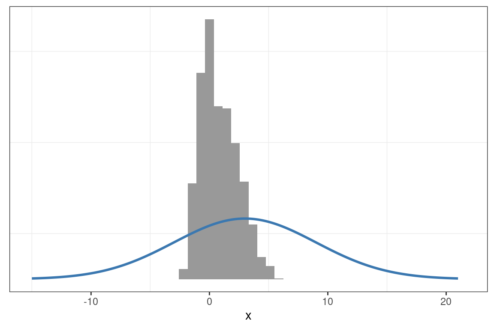
graficar_traza(x_muestras = muestras)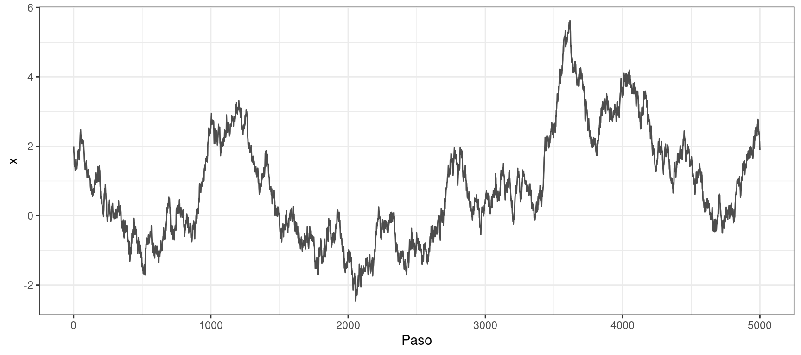
Propuesta: \(\sigma = 2\)
muestras <- metropolis_hastings_normal(n = 5000, x = 2, p = densidad, sigma = 2)
graficar_distribucion(x_muestras = muestras, x_grid = x_grid, p_grid = p_grid)
graficar_traza(x_muestras = muestras)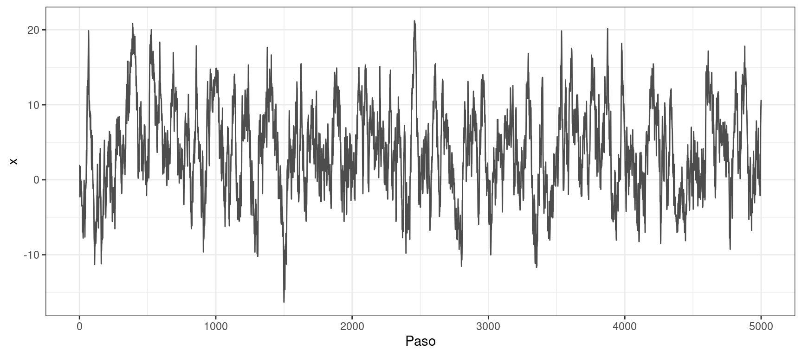
T de Student
\[ X \sim \text{StudentT}(\nu = 5) \]
densidad <- function(x) dt(x, df = 5)
x_grid <- seq(-6, 6, length.out = 500)
p_grid <- densidad(x_grid)Propuesta: \(\sigma = 0.1\)
muestras <- metropolis_hastings_normal(n = 5000, x = 0, p = densidad, sigma = 0.1)
graficar_distribucion(x_muestras = muestras, x_grid = x_grid, p_grid = p_grid)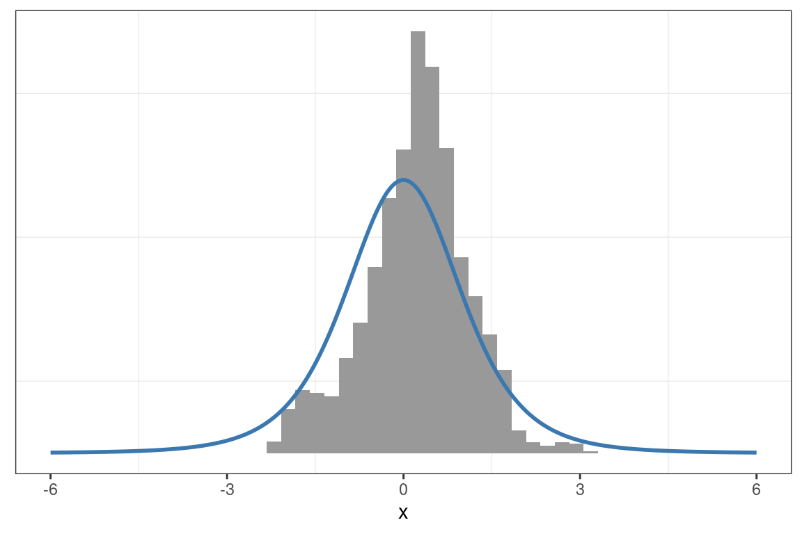
graficar_traza(x_muestras = muestras)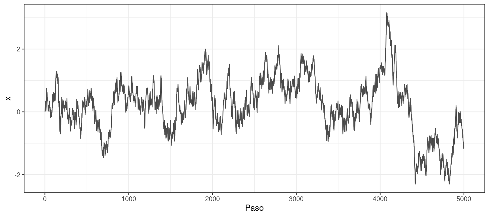
Propuesta: \(\sigma = 1\)
muestras <- metropolis_hastings_normal(n = 5000, x = 0, p = densidad, sigma = 1)
graficar_distribucion(x_muestras = muestras, x_grid = x_grid, p_grid = p_grid)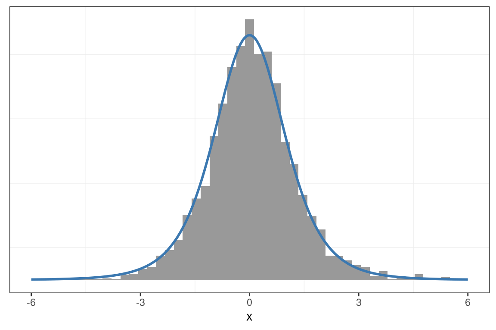
graficar_traza(x_muestras = muestras)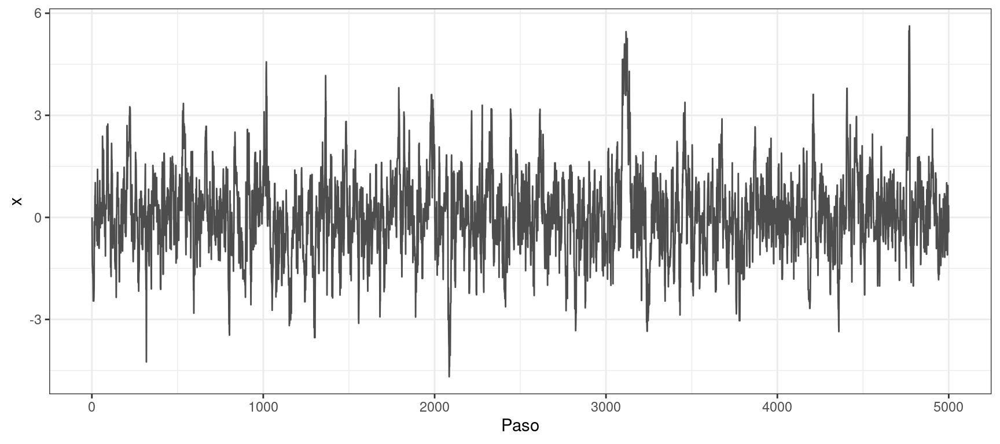
Mezcla de normales
\[ X \sim \frac{2}{3}\text{Normal}(\mu = 0, \sigma = 0.5) + \frac{1}{3}\text{Normal}(\mu = 3, \sigma = 2) \]
densidad <- function(x) {
(2 / 3) * dnorm(x, mean = 0, sd = 0.5) + (1 / 3) * dnorm(x, mean = 3, sd = 2)
}
x_grid <- seq(-5, 10, length.out = 500)
p_grid <- densidad(x_grid)Propuesta: \(\sigma = 0.1\)
muestras <- metropolis_hastings_normal(n = 5000, x = 0, p = densidad, sigma = 0.1)
graficar_distribucion(x_muestras = muestras, x_grid = x_grid, p_grid = p_grid)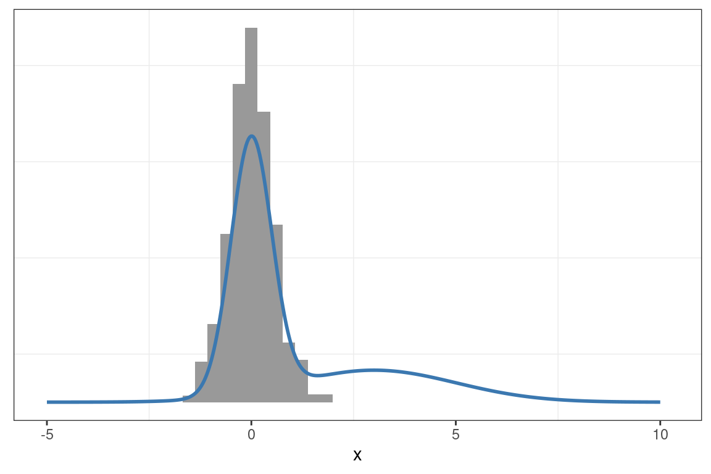
graficar_traza(x_muestras = muestras)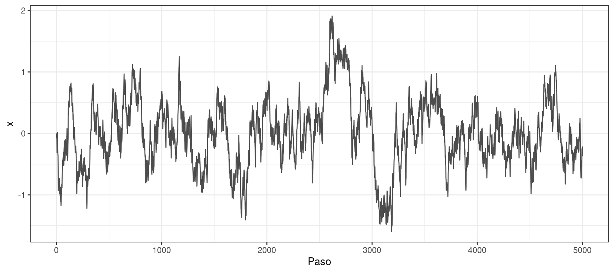
Propuesta: \(\sigma = 1.2\)
muestras <- metropolis_hastings_normal(n = 5000, x = 0, p = densidad, sigma = 1.2)
graficar_distribucion(x_muestras = muestras, x_grid = x_grid, p_grid = p_grid)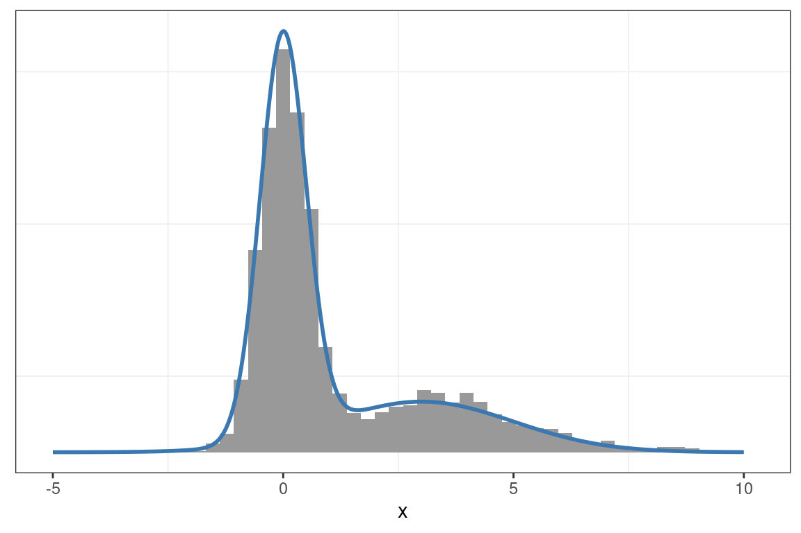
graficar_traza(x_muestras = muestras)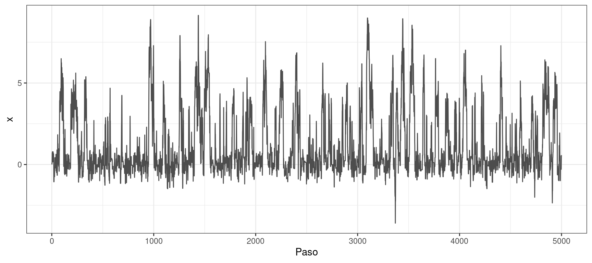
Comentarios
En ninguno de los casos resulta adecuado el desvío estándar inicialmente asignado a la distribución de propuesta. El valor inicial de \(\sigma\) es bajo y las cadenas se desplazan lentamente por el soporte de \(X\). Los traceplots muestran que las muestras obtenidas con \(\sigma=0.1\) presentan una alta autocorrelación. Además, al comparar las muestras con las densidades teóricas, se observa una notable discrepancia.
En cambio, en todos los ejemplos, bastó con incrementar el valor de \(\sigma\) para que la distribución de propuesta generara saltos más largos. Las distribuciones empíricas obtenidas se ajustan mejor a las teóricas, y los traceplots evidencian una autocorrelación considerablemente menor.
Bonus
¿Cómo se ve la trayectoria cuando el punto inicial no se encuentra en el typical set de la distribución?
Ejemplo 1
densidad <- function(x) dnorm(x, mean = 3, sd = 6)
x_grid <- seq(-15, 21, length.out = 500)
p_grid <- densidad(x_grid)muestras <- metropolis_hastings_normal(n = 5000, x = 60, p = densidad, sigma = 3)
graficar_distribucion(x_muestras = muestras, x_grid = x_grid, p_grid = p_grid)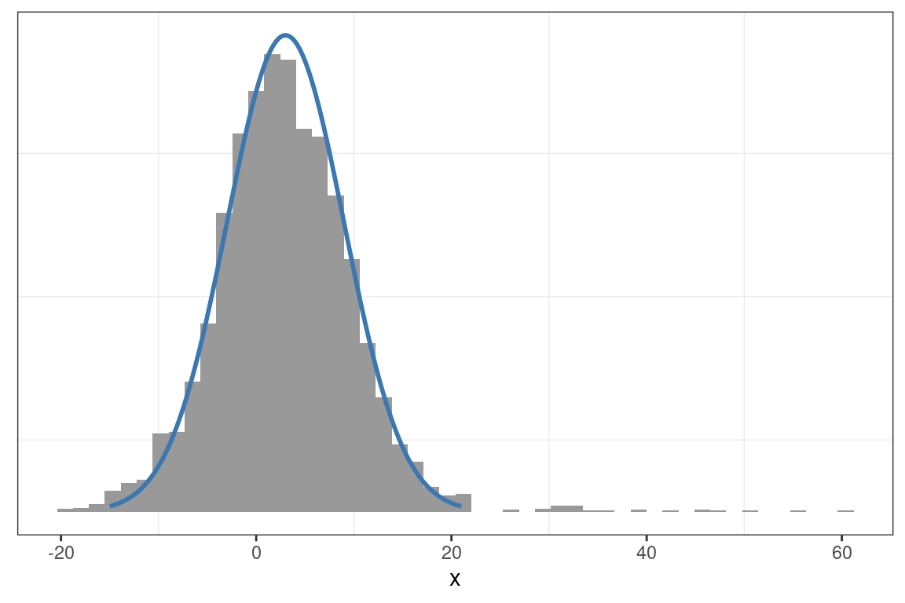
graficar_traza(x_muestras = muestras)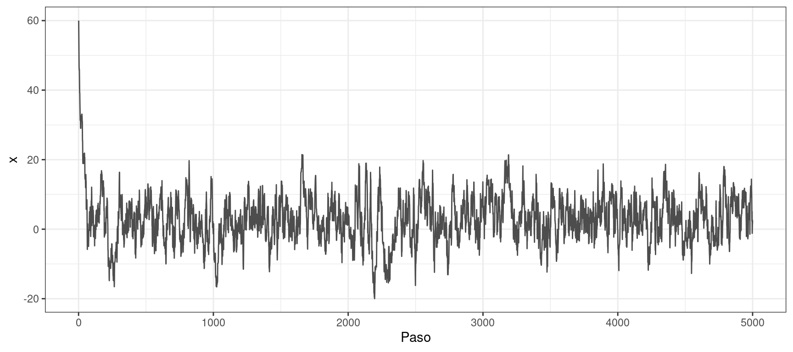
Ejemplo 2
densidad <- function(x) {
(2 / 3) * dnorm(x, mean = 0, sd = 0.5) + (1 / 3) * dnorm(x, mean = 3, sd = 2)
}
x_grid <- seq(-5, 10, length.out = 500)
p_grid <- densidad(x_grid)muestras <- metropolis_hastings_normal(n = 5000, x = -20, p = densidad, sigma = 1)
graficar_distribucion(x_muestras = muestras, x_grid = x_grid, p_grid = p_grid)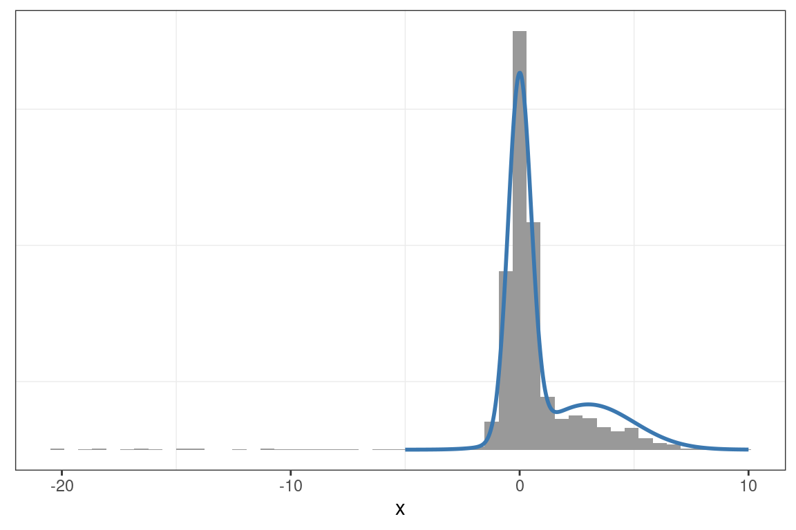
graficar_traza(x_muestras = muestras)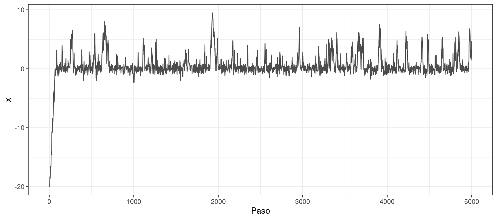